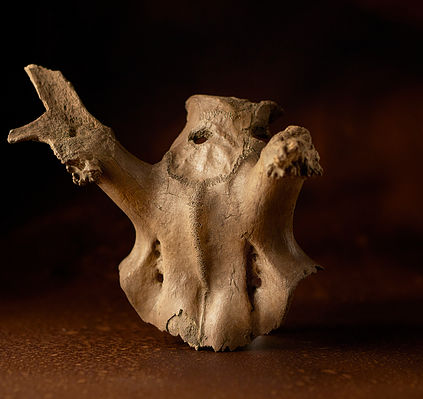

Preview


Powered by 3DHOP
Antler headdresses
One of the most intriguing artefacts found at Star Carr are the antler "frontlets" or headdresses. In the original excavations in 1949-1951, a total of 21 headdresses were found. In our more recent excavations we have found further examples—some well preserved, and others less so.
There are a number of different interpretations concerning what they were used for: possibly for hunting red deer, possibly used by shamans in ritual activities. Although, research on analogous ethnographic groups suggests there may have been no real distinction between these supposedly separate functions. What is clear is that deer skulls were being physically transformed into these enigmatic artefacts.
Over the last year we have been analysing these headdresses, using laser scanning to document and better understand the manufacturing traces visible on their surface. We then used experimental archaeological research, carrying out a range of experiments at the YEAR Centre, in order to replicate the manufacturing traces we saw. This research has enabled us to identify what methods were used 11,000 years ago to make these headdresses: revealing new complexities in their design, making and meaning in the process .This work has now been published in PLOS ONE and further explanation can be seen in a short film we have made.
DOI: http://dx.doi.org/10.1371/journal.pone.0152136
Headdresses from Star Carr can be seen at the Rotunda Museum Scarborough, the British Museum, and The Museum of Archaeology and Anthropology Cambridge.
Video
A short film showing the discovery of the frontlets
Warning: contains scenes of animal butchery. Red deer head ethically sourced and kindly donated by the Deer Society.